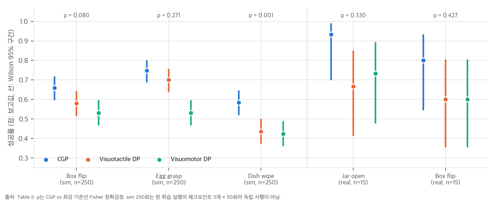
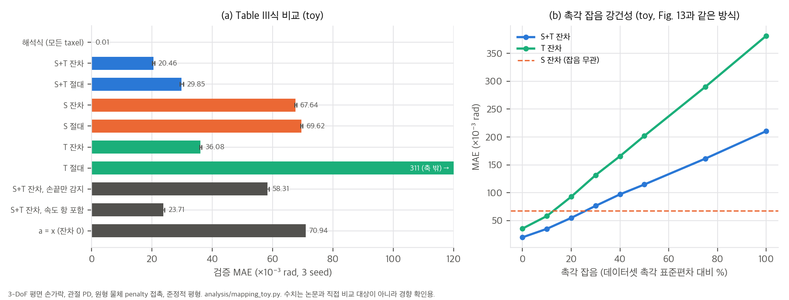
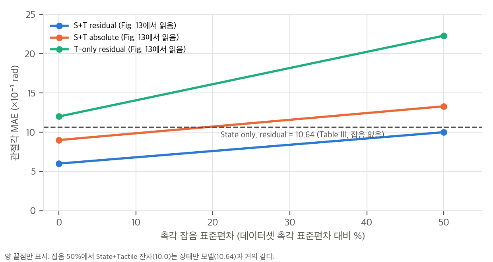

contact-grounded-policy 계정에는 웹페이지 저장소 하나만 있습니다(2026-10-28 확인).한 줄 요약: 다지 로봇손의 visuotactile 모방학습에서 행동(목표 관절각)을 직접 예측하지 않습니다. 대신 미래의 실제 로봇 상태와 촉각을 함께 예측하고, 학습된 contact-consistency mapping M_φ(x, u) → a로 이를 compliance 제어기가 추종할 목표 상태로 바꿉니다.
기여는 두 가지입니다(Sec. I).
관측 O_t = {o_{t−1}, o_t}, o = (RGB 2시점 i, 촉각 u, 로봇 상태 x) (T_o = 2)
│ 시각 인코더 + 촉각 인코더 + 상태 → FiLM 조건
▼
Diffusion U-Net π_θ (Diffusion Policy[4] 구조, DDIM 8스텝)
출력 Y_t = [x_{t+1:t+16}, h_{t+1:t+16}] (실제 상태 궤적 + 촉각 VAE 잠재 궤적, T = 16)
▼
Contact-consistency mapping (스텝별) â_{t+k} = M_φ(x̂_{t+k}, û_{t+k}) (Eq. 1, 잔차형: â = x̂ + Δ)
▼
compliance 제어기: 팔 = 작업공간 임피던스, 손 = 관절 PD. 8스텝 실행 후 재계획 (T_a = 8)
관절마다 PD 제어기를 두면, 제어기는 목표 a와 실제 x의 차이를 토크로 바꾸는 가상 스프링-댐퍼가 됩니다. 자유 공간에서는 x가 a를 잘 따라가지만, 접촉이 생기면 물체가 손가락을 막아 a와 x 사이에 간극이 생기고, 그 결과가 촉각 u에 나타납니다. 저자들은 이 결합 관계를 데이터로 학습합니다.
a_t = M_φ(x_t, u_t) (Eq. 1)
접촉 위치나 접촉 모드를 명시적으로 모델링하지 않습니다. 대신 센서·제어기·embodiment에 묶인 암묵적 사상을 학습합니다. 이 식의 물리적 의미(준정적 평형에서 a = x + Kp⁻¹(…))는 03 §1에서 유도했습니다.
| 시뮬레이션 | 실제 로봇 | |
|---|---|---|
| 팔 / 손 | UR5 + Tesollo DG-5F (5지 20 DoF) | Franka Panda + Allegro V5 (4지 16 DoF) |
| 촉각 | 손가락 안쪽·손바닥 748 taxel × 3D 힘 | 손끝 Digit360 4개 (72×72 RGB) |
| 시뮬레이터 | 실시간 FEM(축소 차수 모델, 데이터 기반 hyper-reduction) + Unreal Engine 플러그인 | — |
| 텔레옵 | Meta Quest 3 손 추적 → RelaxedIK | OptiTrack + 계측 장갑 → RelaxedIK (새끼손가락 무시) |
| 행동 / 상태 차원 | 29 (3 + rot6D 6 + 20) / 27 (3 + 쿼터니언 4 + 20) | 25 / 23 |
| 촉각 잠재 | 32 | 80 (센서당 20) |
| 시간 설정 | 5 Hz, T = 16, T_o = 2, T_a = 8, DDIM 8스텝 | 같음 |
| 방법 | Box Flipping (sim, 60 demos) | Egg Grasping (sim, 100) | Dish Wiping (sim, 100) | Jar Opening (real, 45) | Box Flipping (real, 90) |
|---|---|---|---|---|---|
| CGP | 66.0% (165/250) | 74.8% (187/250) | 58.4% (146/250) | 93.3% (14/15) | 80.0% (12/15) |
| Visuotactile DP | 58.0% (145) | 70.0% (175) | 43.6% (109) | 66.7% (10) | 60.0% (9) |
| Visuomotor DP | 53.2% (133) | 53.2% (133) | 42.4% (106) | 73.3% (11) | 60.0% (9) |
시뮬레이션은 마지막 5개 체크포인트에서 총 250회, 실제 로봇은 연속 15회 시행입니다. 괄호 안 성공 수는 우리가 역산했고, 모두 정수로 떨어집니다(04 C1).

우리 분석: Table II 성공률과 Wilson 95% 구간, CGP vs 최강 기준선 Fisher p.
해석 (재계산은 04_claim_verification.md와 analysis/table_check.py):
시뮬레이션에서 11개 물체를 150개 에피소드(4,114프레임, 에피소드당 평균 27프레임) 동안 텔레옵으로 잡고, 에피소드 단위 1:1로 학습·검증을 나눴습니다. (x, u) → a 예측의 관절각 MAE입니다(×10⁻³ rad, 3 seed 평균 ± 표준편차).
| 입력 | 인코더 | 절대 | 잔차 |
|---|---|---|---|
| 상태 + 촉각 | ResNet1D | 8.80 ± 0.24 | 5.94 ± 0.20 |
| MLP / Transformer | 12.50 / 14.39 | 8.33 / 9.58 | |
| 상태만 | — | 16.05 | 10.64 |
| 촉각만 | ResNet1D | 35.93 | 12.15 |
04 C3).A100에서 DDIM 8스텝 기준으로, 그림에서 읽은 총 시간은 다음과 같습니다.
| Visuomotor DP | Visuotactile DP | CGP | |
|---|---|---|---|
| 촉각 배열 | 약 93 ms | 약 97 ms | 약 112 ms (mapping 약 12 ms) |
| Digit360 | 약 96 ms | 약 133 ms | 약 134 ms (mapping 약 3 ms) |
diffusion 출력 차원은 CGP가 DP보다 2배(시뮬레이션 16×(27+32) = 944 vs 464), 실제 로봇에서는 4배(1,648 vs 400)입니다. 그래도 U-Net 시간은 거의 같습니다. 출력 차원보다 U-Net 폭이 비용을 좌우하기 때문으로 보입니다.
M_φ는 센서 종류와 제어기 설정에 묶여 있어 그대로 옮겨 쓸 수 없습니다. sim-to-real 전이를 다루지 않았습니다(시뮬레이션과 실제를 따로 평가). 과제마다 따로 학습하는 단일 과제 프로토콜입니다. 향후 과제로 센서·제어기 간 공동 학습, 제어기 이득과 로봇 물리 파라미터를 조건으로 넣는 방법, 과제 간 공동 학습을 들었습니다.
04 C8).03 §1). 관절 PD에서 평형은 a = x + Kp⁻¹(g(x) − Σ Jᵀf)입니다. 접촉력 f와 접촉점 Jacobian을 알면 사상은 해석적으로 정해집니다. 시뮬레이션은 taxel마다 3D 힘을 주므로, 해석식이나 "해석식 + 학습 잔차" 기준선이 가능했지만 비교하지 않았습니다. 저자들이 향후 과제로 든 "제어기 이득을 조건으로" 넣는 방향도, 해석식에서는 Δ ∝ Kp⁻¹이라 구조가 이미 정해져 있습니다.03 §3, toy M4).04 §4).재계산 스크립트는 analysis/mapping_toy.py(결과 mapping_toy_results.json, CPU 약 2분)와 analysis/table_check.py입니다. toy는 논문 Fig. 2와 같은 3-DoF 평면 손가락을 관절 PD로 제어하는 설정입니다. 논문 수치를 재현하려는 것이 아니라 Eq. 1이 무엇을 학습하는지 확인하는 것이 목적입니다.
손 관절은 PD 제어기 τ_m = Kp(a − q) − Kd q̇로 구동됩니다(Sec. III-A). 관성을 무시할 만큼 느린 움직임(준정적)이라면 관절 토크 평형은 다음과 같습니다.
Kp (a − q) − Kd q̇ + Σ_k J_k(q)ᵀ f_k + Σ_i J_{c,i}(q)ᵀ m_i g = 0
이를 목표 a에 대해 풀면 다음 식이 됩니다.
a = q − Kp⁻¹ [ Σ_k J_k(q)ᵀ f_k + τ_g(q) ] + Kp⁻¹ Kd q̇
─── ───────────────────────────────── ───────────
실제 접촉·중력이 만드는 간극 (x, u의 함수) 속도 항 (x에 없음)
해석:
위 식이 정확하려면 세 조건이 필요합니다. 실제 시스템에서는 셋 다 깨질 수 있습니다.
mapping_toy_results.json)
| 모델 | 검증 MAE (×10⁻³ rad) | 논문 Table III 대응값 |
|---|---|---|
| 해석식 (Kp, 기구학, 모든 taxel 힘을 앎) | 0.008 | 없음 |
| MLP 상태 + 촉각, 잔차 | 20.5 ± 0.4 | 5.94 |
| MLP 상태 + 촉각, 절대 | 29.9 ± 0.6 | 8.80 |
| MLP 상태만, 잔차 | 67.6 ± 0.3 | 10.64 |
| MLP 촉각만, 잔차 | 36.1 ± 0.3 | 12.15 |
| MLP 촉각만, 절대 | 311 ± 0.6 | 35.93 |
| a = x (잔차 0) | 70.9 | 보고 안 됨 |
| MLP 상태 + 촉각, 잔차, 손끝 taxel만 감지 | 58.3 ± 0.5 | 실제 로봇(Digit360)에 해당 |
| 해석식, 손끝 taxel만 감지 | 51.1 | |
| MLP 상태 + 촉각, 잔차, 속도 항 포함 (q̇ ~ N(0, 0.4 rad/s)) | 23.7 ± 0.5 | 하한 6.4 |
확인된 것:
논문과 다른 것 (촉각 잡음, M5): toy의 상태+촉각·잔차 모델은 데이터셋 촉각 표준편차의 10%만 잡음을 넣어도 오차가 20 → 35로 오르고, 약 25%에서 상태만 모델보다 나빠집니다. 논문 Fig. 13은 50%에서도 +67%에 그칩니다. 차이의 이유로는 세 가지를 생각할 수 있습니다. toy의 taxel 신호는 대부분 0이어서, 잡음이 "없는 접촉"을 만들어 냅니다. toy는 잡음 없이 학습했습니다. 논문의 ResNet1D 인코더는 공간적으로 매끄러운 특징을 써서 독립 잡음을 평균화합니다. 어느 쪽이든 강건성은 잡음을 무엇에 상대적으로 정의하는가와 학습 방식에 크게 좌우되므로, 논문의 "넓은 범위에서 안정적"이라는 표현을 일반화하기는 어렵습니다.

논문 자체 수치로도, 잡음 50%에서 상태+촉각·잔차 MAE(약 10.0)는 Table III의 상태만 모델(10.64)과 거의 같습니다. 촉각이 주던 이득(10.64 − 5.94 = 4.70) 가운데 남는 것은 약 0.64(14%)입니다. "오차가 안정적"이라기보다 **"촉각이 무의미해질 때까지 점진적으로 나빠진다"**가 정확한 표현입니다. 배포 시 diffusion이 예측한 촉각의 오차 크기가 보고되지 않았으므로, 실제 정책에서 이 곡선의 어느 지점에 있는지는 알 수 없습니다.
04 C8)CGP는 매 추론마다 16스텝의 (x̂, û)를 만들고 8스텝을 실행합니다. M_φ는 예측값에 적용되므로, 실행 중인 8스텝 동안 실제 촉각은 목표에 반영되지 않습니다. "5 Hz"를 어떻게 읽느냐에 따라 시간 규모가 달라집니다.
| 해석 | 행동 스텝 | 재계획 주기 | 예측 구간 | A100 추론(최대 약 134 ms) |
|---|---|---|---|---|
| 5 Hz = 행동 스텝 주기 | 0.2 s | 1.6 s | 3.2 s | 재계획 주기의 8% |
| 5 Hz = 추론 주기 | 25 ms | 0.2 s | 0.4 s | 주기의 67% |
어느 쪽이든 미끄러짐 같은 빠른 사건에는 제어기의 수동적 순응이 먼저 반응하고, 정책은 다음 재계획에서야 촉각을 봅니다. 청크 안에서 관측 촉각과 예측 촉각의 차이(u_obs − û)로 목표를 보정하면 이 간극을 줄일 수 있습니다.
analysis/table_check.py → table_check_results.json, analysis/mapping_toy.py → mapping_toy_results.json| # | 주장 (출처) | 재계산·근거 | 판정 |
|---|---|---|---|
| C1 | Table II 수치 (sim 250회, real 15회) | 모든 성공률 × 시행 수가 정수(예: 165, 145, 133 / 14, 10, 11) | ✅ 내부 일관 |
| C2 | "CGP가 기준선을 일관되게 앞선다" (Sec. V-A) | 점추정은 다섯 과제 모두 1위. 최강 기준선 대비 Fisher p: 박스(sim) 0.080, 달걀 0.271, 접시 0.001, 병뚜껑 0.330, 박스(real) 0.427. sim 묶음 MH p = 2.4×10⁻⁴(비독립 시행이라 낙관적), real 묶음 p = 0.13 | ⚠️ sim 일부만 유의, real은 표본 부족 |
| C3 | 상태와 촉각이 모두 필요하고 잔차형이 낫다 (Table III) | 잔차 기준 상태+촉각은 상태만보다 44%, 촉각만보다 51% 낮음(3 seed Welch p = 3×10⁻⁴, 3×10⁻⁶). 잔차형은 33–66% 감소 | ✅ 단, a = x 기준선과 평균 간극이 없음 |
| C4 | Eq. 1은 접촉 위치·모드나 동역학을 명시하지 않는 암묵적 사상 (Sec. III-B) | toy에서 해석식 a = q − Kp⁻¹(Jᵀf + τ_g)가 오차 0.008×10⁻³ rad로 정확히 성립. MLP는 20.5 | ⚠️ 사상의 구조는 해석적으로 정해짐 (03 §1) |
| C5 | 매핑은 촉각 잡음에 강건하다 (부록 E, Fig. 13) | 그림에서 읽으면 상태+촉각·잔차 6.0 → 10.0(잡음 50%, +67%). 50%에서 상태만 모델(10.64)과 거의 같아 촉각 이득의 86%가 사라짐. 직선 외삽 시 약 58%에서 같아짐 | ⚠️ "안정적"은 과장 |
| C6 | KL 정규화가 정책 성능을 높인다 (Fig. 7) | 그림에서 읽으면 박스 66 vs 약 62(p ≈ 0.40), 달걀 75 vs 약 64(p ≈ 0.009). 접시 닦기는 보고 안 됨 | ⚠️ 두 과제 중 하나만 유의 |
| C7 | Table IV 복원 지표 | MAE / Active MAE ≤ 활성 taxel 비율 → 박스 ≤ 10%, 달걀 ≤ 12%, 접시 ≤ 23%. KL 제거 시 KL 손실 1.9–6.1배. Fig. 7의 MAE·KL 막대가 Table IV ResNet1D 행과 일치 | ✅ 일관. 촉각 배열은 매우 희소 |
| C8 | Table VI (Digit360) | PSNR로 구한 RMSE가 MAE의 1.8–2.1배(가우시안이면 1.25배) → 오차가 접촉 영역에 몰림. 압축 15,552 → 20 (약 780배) | ✅ 일관 |
| C9 | Table V 차원 | 29 = 3 + 6 + 20, 27 = 3 + 4 + 20, 25 = 3 + 6 + 16, 23 = 3 + 4 + 16 | ✅ |
| C10 | 추론 시간이 기준선과 비슷하다 (Fig. 8) | 그림에서 읽은 총 시간: 촉각 배열 93 / 97 / 112 ms, Digit360 96 / 133 / 134 ms. mapping은 12 ms(배열, 복원·재인코딩 포함)와 3 ms. diffusion 출력 차원은 CGP가 2배(sim), 4배(real) | ✅ 촉각 배열에서는 +15% |
| C11 | 실행 시간 구조 | "5 Hz"가 행동 스텝이면 재계획 1.6 s, 추론 주기이면 행동 스텝 25 ms. 어느 쪽이든 청크 실행 중에는 관측 촉각이 목표에 반영되지 않음 | 논문에 명시 없음 |
| C12 | 평가 프로토콜 | sim: 한 학습 실행의 마지막 5개 체크포인트 × 50회, 학습 seed 반복 없음. real: 연속 15회. 15 대 15에서 p < 0.05가 되려면 대략 14/15 대 8/15(차이 40%p)가 필요 | ⚠️ 통계 검정력 낮음 |
| C13 | 매핑 데이터 규모 | 150 에피소드 / 4,114 프레임(에피소드당 27프레임), 1:1 분할이라 학습은 75 에피소드 | 참고 |
불가능합니다. 2026-10-28 기준 코드, 가중치, 데이터가 공개되지 않았습니다. 프로젝트 페이지의 링크는 논문과 영상뿐이고, GitHub contact-grounded-policy 계정에는 웹페이지 저장소만 있습니다. 1저자의 GitHub에도 이전 연구(UniT, DiffOG, LeTO 등) 저장소만 있습니다. 시뮬레이션 실험은 Meta 내부 FEM 솔버와 Unreal Engine 플러그인을 쓰므로, 코드가 공개되더라도 시뮬레이션 부분은 그대로 재현하기 어려울 가능성이 큽니다.
| 단계 | 가능 여부 | 근거 |
|---|---|---|
| 표·그림 수치 재계산, Eq. 1 해석과 toy 검증 | ✅ 완료 | table_check.py, mapping_toy.py (numpy, CPU 약 2분) |
| 공개 시뮬레이터로 매핑 실험(Table III) 재현 | ✅ 가능할 것으로 보임 | MuJoCo는 CPU에서 돌고, 접촉력과 touch 센서를 줍니다. 손 모델과 스크립트 파지로 (x, u, a) 데이터를 만들 수 있습니다. MuJoCo 설치가 필요합니다 |
| CGP 정책 학습(작은 규모) | ⚠️ 조건부 | 구조는 Diffusion Policy + VAE + MLP라 큰 모델이 아닙니다. PyTorch MPS로 작은 저차원 과제는 학습할 수 있을 것으로 보이지만, torch 설치가 필요하고 MPS에서의 학습 속도는 확인하지 않았습니다. 데이터는 직접 만들어야 합니다 |
| 논문 과제 재현(FEM 시뮬레이션, Allegro + Digit360 실물) | ❌ | 시뮬레이터 비공개, 하드웨어 없음 |
| 구성 요소 | 난이도 | 메모 |
|---|---|---|
| Diffusion 정책 뼈대 | 낮음 | 공개된 Diffusion Policy 코드에서 출력만 바꿉니다. 행동 대신 [실제 상태, 촉각 잠재]를 예측합니다 |
| 촉각 VAE | 낮음 | 1D ResNet(배열) 또는 2D ResNet(이미지), KL 가중치 1e-5–1e-4(Table V) |
| Contact-consistency mapping | 낮음 | 잔차 MLP. 기구학과 강성을 알면 해석식 Δ = −Kp⁻¹(Jᵀf + τ_g)를 기본값으로 두고 잔차만 학습하는 편이 데이터 효율이 좋습니다(03 §3) |
| 학습 데이터 (x, u, a 세 쌍) | 높음 | 목표(명령)와 실제 상태, 촉각을 모두 기록한 텔레옵 데이터가 필요합니다. 대부분의 공개 데이터셋은 명령과 실제 상태를 함께 저장하지 않습니다. compliance 제어기 위에서 직접 수집해야 합니다 |
| 촉각이 있는 시뮬레이션 | 중간–높음 | 손 전체 촉각 배열이 필요합니다. 공개 시뮬레이터로 만들 수 있지만, 연성체(스펀지)와 깨지는 달걀 같은 과제 자산은 새로 만들어야 합니다 |
| 실제 로봇 | 높음 | 다지 손 + 손끝 촉각 + compliance 제어기 + 손 추적 텔레옵 |
요약: 공식 코드로 재현하는 경로는 없습니다. 알고리즘 자체는 표준 구성 요소(Diffusion Policy, VAE, MLP)라 다시 구현하기 쉽습니다. 어려운 부분은 (실제 상태, 촉각, 목표) 세 쌍을 담은 데이터와 촉각 시뮬레이션입니다. 이 맥에서는 MuJoCo로 매핑 부분을 먼저 검증하고, 필요하면 작은 정책 학습을 MPS로 시도하는 순서가 현실적입니다. 둘 다 패키지 설치가 필요합니다.
번호 [n]은 논문의 참고문헌 번호이고, arXiv ID는 논문 참고문헌 목록에 적힌 값을 그대로 옮겼습니다. 이 문서의 각 논문을 별도로 열어 내용을 검증하지는 않았습니다.
[행동 생성] Diffusion Policy [4] (RSS 2023) ─ 관측 → 행동 청크, U-Net, DDIM, FiLM 조건
│
├─ [촉각을 관측으로 추가] 3D-ViTac [13], PolyTouch [41], Reactive DP [34], FACTR [19], ViTacFormer [9]
│ 촉각을 입력 특징이나 보조 예측 목표로 사용 (Table I의 "executable contact modeling 없음")
│
├─ [촉각·힘을 예측 목표로] ViTacFormer [9], Unified Multimodal Diffusion Forcing [14], MLA [20]
│ 미래 촉각·힘을 예측해 표현을 다듬지만, 예측한 접촉을 제어 목표와 직접 잇지 않음
│
├─ [제어 가능한 접촉 표현: 단일 힘 벡터] Adaptive Compliance Policy [12], Compliant Residual DAgger [31], UMI-FT [5]
│ 팔 엔드이펙터 힘 하나 또는 그리퍼 손가락당 힘 하나 → 임피던스 목표
│
└─ [제어 가능한 접촉 표현: 손끝 힘] KineDex [39], DexForce [3]
다지 손이지만 손끝마다 sparse한 힘
▼
★ CGP: 손 전체의 분포 접촉을 (실제 상태, 촉각) 궤적으로 생성하고, 학습된 사상으로 compliance 목표로 변환
차별점 요약 (Table I): 제어기가 실행할 수 있는 접촉 모델을 두면서, 다지 손과 분포 접촉(손 전체 다중 패치)까지 다루는 것은 CGP뿐이라고 주장합니다. 차이는 접촉을 힘 벡터 몇 개로 매개화하지 않고 촉각 신호 자체를 예측한다는 점입니다.
| 역할 | 출처 | 이 논문에서의 쓰임 |
|---|---|---|
| 조건부 diffusion 정책 | Diffusion Policy [4] | U-Net denoiser, T_o = 2 / T = 16 / T_a = 8 기본값 그대로 |
| 학습·샘플링 | DDPM [11], DDIM [26] | 노이즈 예측 학습, 8스텝 DDIM 추론 |
| 잠재 공간 생성 | Latent Diffusion [24], VAE [16] | 촉각을 KL 정규화 VAE 잠재로 압축한 뒤 생성 |
| 조건 주입 | FiLM [21] | 시각·촉각·상태 특징을 U-Net 전체에 주입 |
| 회전 표현 | rot6D [42] | 목표 회전 6차원 |
| 팔 제어 | deoxys [28], VIOLA [43]의 작업공간 임피던스 | 팔 목표 = 임피던스 setpoint |
| 텔레옵 IK | RelaxedIK [23], RangedIK [29] (2저자 Yeping Wang의 선행연구) | 사람 손끝 → 로봇 손가락 관절 |
| 손 추적 | UmeTrack 8, 마커 기반 손 추적 [7](OptiTrack + 장갑) | 시뮬레이션·실제 텔레옵 |
| 촉각 센서 | Digit360 [17] (Meta) | 실제 손끝 4개, 72×72 RGB |
| 시뮬레이터 | 축소 차수 FEM [27, 2, 44, 25] (Meta Reality Labs 계열) + Unreal Engine | 강체·연성체(스펀지) 접촉, 748 taxel 촉각 배열 |
| 촉각 표현 선행연구 | UniT [33] (1저자의 선행연구, RA-L 2025) | 촉각 표현 학습 계보 |
| 논문 | 관계 |
|---|---|
GPT-as-Tactile-Policy (gpt6_astra_tactile/) |
둘 다 촉각 정책이지만 촉각을 쓰는 위치가 다릅니다. 그쪽은 촉각을 정책의 입력(판단 근거)으로 쓰고, CGP는 촉각을 예측 대상이자 제어 목표의 근거로 씁니다. 그쪽 UniVTAC 2×2 재현 실험에서는 촉각이 Task Skill(촉각을 쓰는 규칙)과 함께 있을 때만 유의했습니다(+50%p, Skill이 없으면 +15%p로 비유의). CGP Table II에서 촉각을 관측으로만 넣은 visuotactile DP의 이득이 작거나 음수인 것(병뚜껑 열기 73.3% → 66.7%)과 같은 방향의 관찰입니다. 두 결과 모두 촉각을 "어떻게 쓰는지"가 구조로 주어질 때 효과가 난다는 쪽을 가리킵니다. |
DexScrew (dexscrew/) |
텔레옵으로 다지 손 촉각 데이터를 모아 BC를 학습한다는 점이 같습니다. DexScrew는 어려운 손가락 동작을 RL 기술로 맡기고, CGP는 compliance 제어기와 목표-실제 간극으로 접촉을 다룹니다. 두 방법은 결합할 수 있습니다. |
FlashDexRetarget (flashdexretarget/) |
FlashDexRetarget 정책은 링크별 접촉 wrench를 privileged 관측으로 씁니다. CGP의 M_φ는 촉각에서 그와 같은 접촉 효과(목표-실제 간극)를 복원하는 학습 모듈로 볼 수 있습니다. 시뮬레이션에서 만든 대량 궤적에 촉각 배열을 붙이면 CGP의 학습 데이터가 됩니다. |
Do as I Do (do_as_i_do/) |
사람 시연을 로봇 궤적으로 바꾸는 쪽입니다. CGP는 텔레옵(RelaxedIK)으로 직접 시연을 모으므로 리타겟팅 품질 문제는 텔레옵 단계에서 사람이 보정합니다. |
| 주제 | 관련성 | 근거 수준 |
|---|---|---|
| 임피던스·강성 제어의 고전 관계 τ_ext = K(a − x) | M_φ가 학습하는 사상의 물리적 구조입니다. 관절 PD라면 a = x + Kp⁻¹(g − Jᵀf)입니다(03 §1). 저자들이 향후 과제로 든 "제어기 이득 조건화"의 해석식이기도 합니다. |
교과서 수준의 관계. 유도는 03 |
| Feel the Force (사람 시연에서 접촉력을 예측해 힘 제어로 실행하는 계열) | "예측한 힘을 제어기로 실현한다"는 같은 문제의식이고, 그리퍼 중심입니다. | 내 사전 지식. 서지 확인 필요 |
| Real-Time Chunking 등 청크 경계 처리 | CGP는 8스텝 청크 동안 관측 촉각을 쓰지 않습니다(01 §4.2). 청크 안에서 촉각 오차를 반영하는 방법과 연결됩니다. |
내 해석 |
| Tactile beyond pixels [10] (Meta 계열 다감각 촉각 표현) | 같은 Meta 생태계의 사전학습 촉각 표현입니다. CGP는 촉각 인코더를 과제마다 처음부터 학습하므로, 사전학습 인코더로 바꾸는 실험이 자연스럽습니다. | 인용은 됨. 결합은 내 해석 |
한계: 4절의 서지 정보 일부는 내 사전 지식에 근거합니다. 블로그나 git에 올리기 전에 원문을 직접 확인해야 합니다.